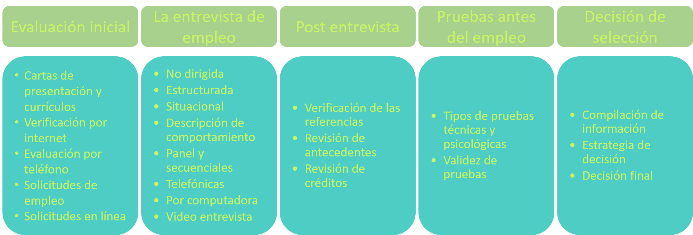
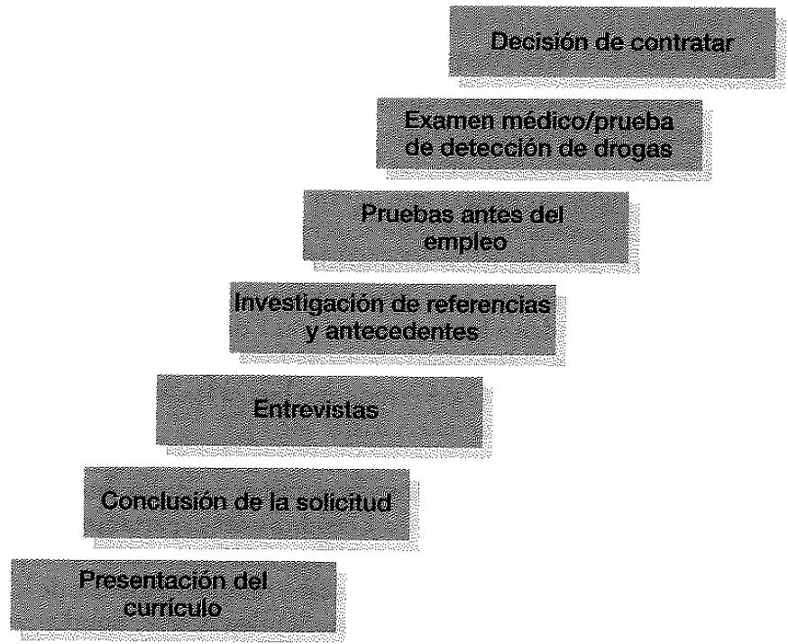
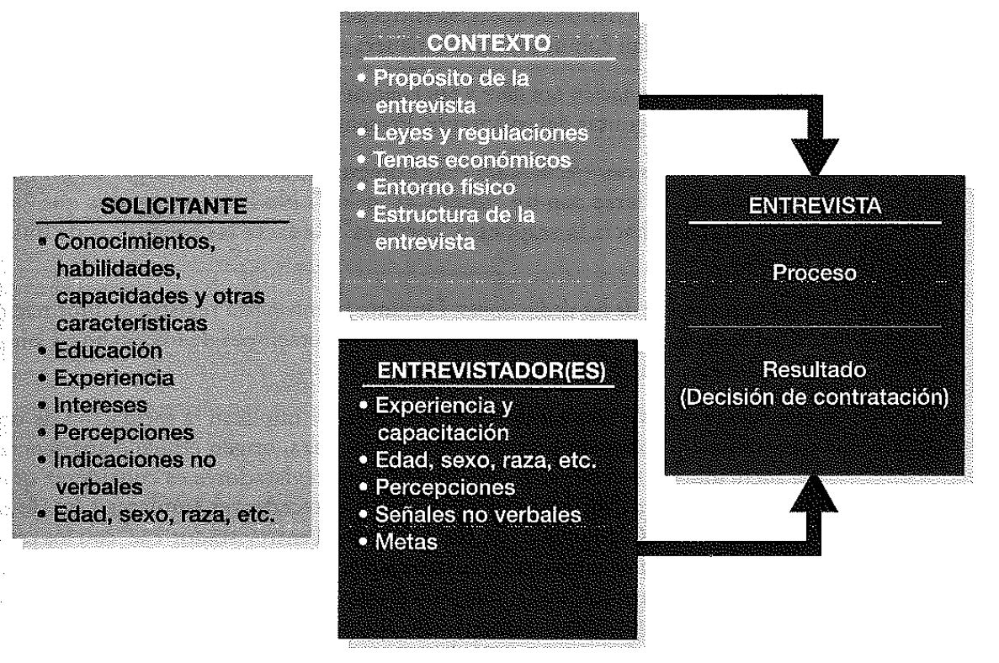
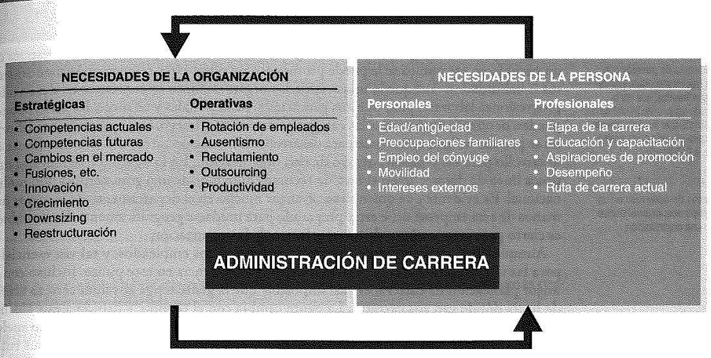
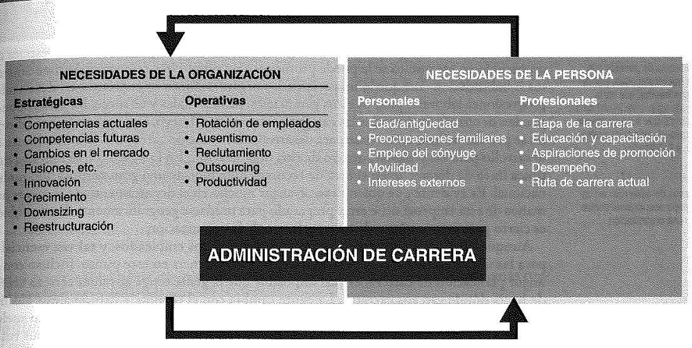

Antes de todos los procesos, hay que definir adecuadamente el puesto, ya que esto implica directamente en el resto de los siguientes procesos. Una herramienta para
Analizar correctamente el puesto es con el Scorecard. Esta muestra:
- Misión del trabajo: Describe la esencia del trabajo y por qué el rol existe. Es decir, qué exactamente va a hacer el candidato tomando el rol.
- Resultados: Desarrollar 3-5 objetivos que una persona debe completar. Más concretamente, qué necesidades deben ser completadas en los
primeros 3/6/12 meses, o cuánto retorno debiera lograr a fin de año.
- Competencias: Identificar las competencias apropiadas para poder lograr los resultados. Ejemeplo, Cuáles competencias son críticas y relacionadas
con el trabajo para el rol, o Qué valores son esenciales para una relación a largo plazo, independiente del rol.
Luego, existe también la descripción del puesto, la cual define:
- Breve Background y descripción de la compañía
- Funciones de la posición: la sección más larga, detallada y específica. Debe decir tareas diarias, además de mencionar si debe tratar con
público o sólo personal interno.
- Competencias requeridas: Requerimientos técnicos, educacionales que pueden ser excluyentes o solo deseados para un perfil adecuado. Aquí se
puede incluir el ambiente de la compañía que se desea tener.
- Estructura organizacional: Para oriental el nivel jerárquico del rol buscado.
- Criterio de evaluación: Mientras más específico, mejor. Aquí se muestra qué es lo más importante tanto para la empresa como para el empleado.
Lógicamente, la evaluación debe estar enfocada en lograr el éxito del negocio.
- Compensación: Es mejor plantear rangos o incluso niveles de salario/compensaciones
- Ubicación física y alrededores
Para realizar cualquiera de ambas herramientas, se le puede preguntar a los Analistas de Puestos, Empleados o Supervisores a través de Entrevistas, Cuestionarios,
Observaciones o Diarios.
Hay que destacar que las descripciones de puestos pueden confundir si están mal redactados, se podría olvidar actualizarlos, además de que limita la flexibilidad
del puesto y así, de la organización.

El costo de contratar mal a alguien en una posición intermedia es de aproximadamente 20.000 USD y 100.000 USD si es alto directivo. Es por esto que el objetivo
de la selección es maximizar los aciertos de la búsqueda del empleado con características concretas.
Respecto a la validez de las pruebas, es decir, la capacidad de predecir el comportamiento laborar relevante, esta debe ser pertinente con el puesto, basarse en
evidencia teórica y empírica de la organización, y tener capacidad de correlación entre las variables usadas y el éxito en el puesto.
Los posibles tipos de pruebas son las de conocimiento del puesto, muestra de trabajo, centros de evaluación, habilidad cognitiva, biodatos, personalidad e intereses,
honestidad e integridad, detector de mentiras, habilidades físicas, exámenes médicos y de detección de drogas. Se dice que mientras más pruebas se realicen, más
posibilidad hay que demanden por discriminación. Independiente de eso, KeyBank logró ahorros de 1,75 millones USD por menor rotación al usar herramientas virtuales
de prueba.


Durante la entrevista, es importante capacitar al entrevistador. Se requiere que comprenda el puesto, estableza un plan de entrevistas, establecer y mantener un
buen ambiente, atender lenguaje no verbal, proveer informacióon libre y honesta, utilizar preguntas neutras, separar hechos de deducciones, reconocer sesgos y
estereotipos, evitar el error de halo, controlar el curso de la entrevista y estandarizar las preguntas.
Sobre la verificación de referencias, se puede preguntar sobre la relación con el candidato, fechas de empleo, títulos y responsabilidades, áreas sobresalientes y
por mejorar, mayor logro, capacidad social, manejor de conflictos/stress, responsabilidad, puntualidad, razón de desvinculación, recontratabilidad, entre otros.
Sobre la decisión misma de contratación, está el enfoque clínico y el estadístico. El enfoque clínico deja a libre interpretación la información de los candidatos,
lo cual normalmente tiene sesgos/estereotipos y lleva a un equipo de trabajo heterogéneo junto con posible discriminación. El enfoque estadístico es objetivo con
los datos recopilados, ya que los cuantifica y pondera de la forma apropiada. Además, está el hecho de que si te va mal en cierto aspecto, puedes compensarlo en
otro. También se le puede agregar que hayan fases de selección si las pruebas son muy costosas, para que se vayan filtrando lo más posible los candidatos y no
gastar de más. Lo malo del enfoque estadístico es que hay que siempre actualizar los criterios a ponderar.
La gestión de compensación cumple 5 objetivos. Recompensar a los empleados según el valor que genera a la empresa, Lograr las metas de negocio motivando, enganchando y atrayendo al personal;
Promover alto rendimiento, apoyar y desarrollar la cultura organizacional y Definir el correcto comportamiento y resultados.
Hay que destacar que los incentivos al esfuerzo, si bien aumentan el rendimiento (Prentice et al, 2007) (Lazear, 1999), puede no ser el suficiente para que valga la pena.
Aspectos negativos es que no favorecen el trabajo en equipo ni calidad, es un incentivo que no necesariamente prevalece en el futuro y si se gestiona mal termina siendo peor, lo cual suele ser el caso.
Para evitar problemas en la implementación del diseño de compensación, es necesario evitar la sobre complejidad, desalineación HR/Negocio y forzarla prematuramente.
Luego, ir probándolas pon pilotos en pequeñas áreas de le empresa. Además, hay que ser apropiado a la cultura de la empresa; equitativo, justo, consistente y transparente, ascensos legítimos, flexible, desarrollo continuo,
clarificar la metodología, y poder ser monitoreable.
 
